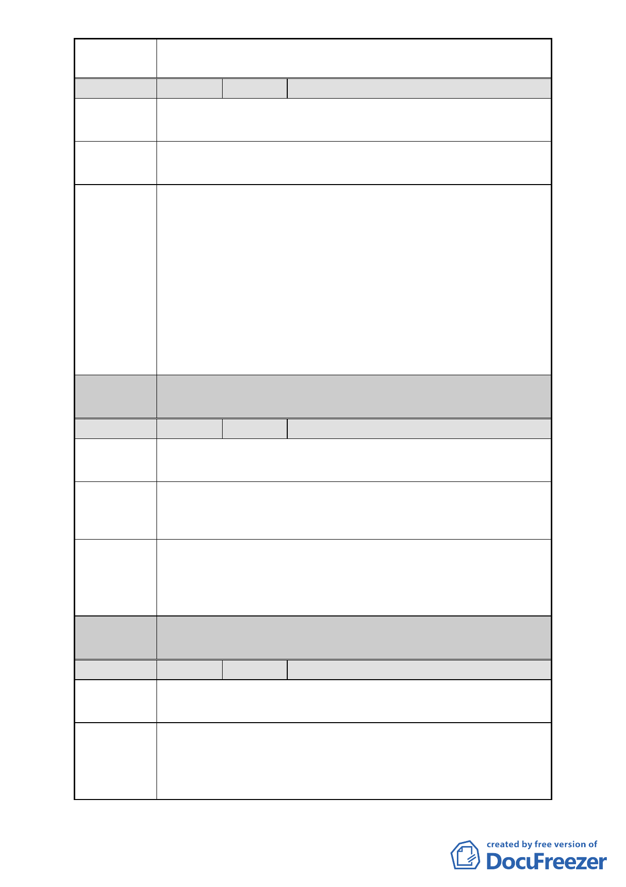

案名
編號
陳情地點
陳情理由
建議辦法
委員會
決議
編號
陳情地點
陳情理由
建議辦法
委員會
決議
編號
陳情地點
陳情理由
變更臺北市中正區南海段一小段 719、724 地號等 2 筆停車場
用地為廣場用地細部計畫案
2 陳情人 蕭慈聖
中正區南海段一小段 719、724 地號
中正區羅斯福路一段 55 號
本區域之公共設施用地佔用面積，已遠高於都市計畫法第 45
條所規定百分之十，因此做為廣場之用，實無需要。
請將此基地變更為商業區，並出售給予原有住戶，或請就地
安置，理由如下：
1.促進地方之繁榮
此基地，乃位於本區之行政商業中心點，若能變更改為之
商業用地，才符合地方之需要，且地盡其利。
2.增加市府財政
該基地，不論是出售予原住戶，亦或是就地安置，皆可省
下政府耗資拆遷補償、及開闢廣場之浩大費用。如此一來，
並可回收售出資金，以利財政之更大收益。
參與審議開會。
同編號 1。
3 陳情人 謝月碧
中正區南海段一小段 719 地號
中正區羅斯福路一段 57 號
本地號周邊就有中正紀念堂、植物園和 228 公園，針對這塊
黃金地段，為便發揮最大經濟效益，希望都市發展局能將該
用地變更為商業廣場，帶動周邊經濟繁榮。
希望主辦單位工務局改由交通捷運局主辦，目標朝捷運共
構、聯合開發，讓原住戶能就地安置，達成雙贏，以方便統
一管理。
市民要求參加都發局審議開會。
同編號 1。
4 陳情人 唐光雄
中正區南海段一小段 719、724 地號
中正區羅斯福路一段 51 號
有關捷運中正紀念 3 號出口前，捷運局本身就有留一塊空
地，現今為臨時搭建之組合屋施工所，日後足夠改為供民眾
等候及休憩空間之用，不用擴大浪費使用這塊黃金地段，而
闢為廣場，同時也能保障居民住的權利。
-7-